Cayeux 2009

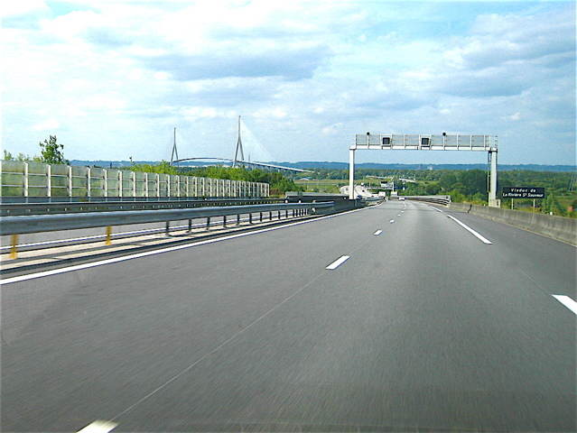
J'ai quitté Houlgate avec tristesse, mais passée la Seine, je ne penserai plus qu'à Cayeux qui m'attend...

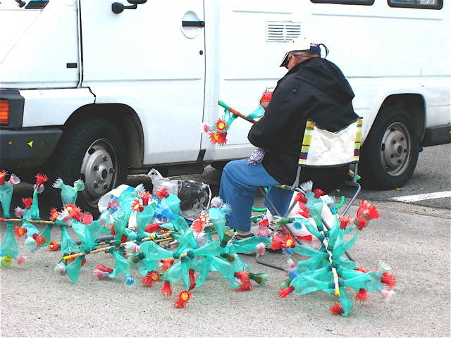
A l'arrivée, juste temps pour rattraper l'apéritif des camping-caristes assidus, dîner, parlotes et dodo... Le lendemain, Néné est déjà en train de monter ses cactus au pied de son camion...

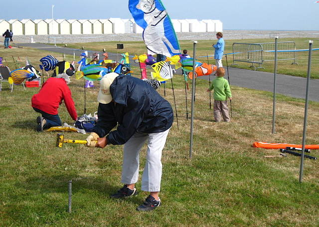
Son frère François, lui, va planter ses moulinets en CD. Mais les mâts font bien 4 cm de diamètre et les trous sont durs à percer dans le galet aggloméré...

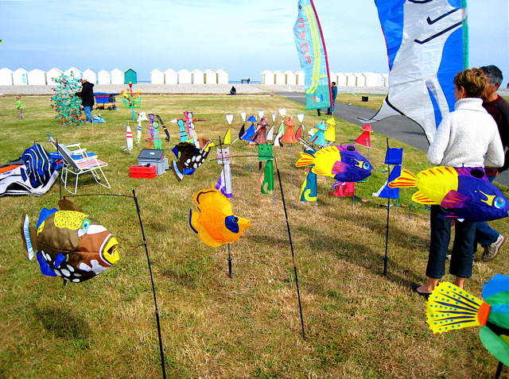
Des jardiniers bien imprudents ont implanté des poissons juste à côté des chats d'Emmanuel, qui dressent déjà les oreilles !

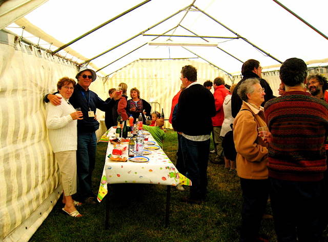
Pour fêter mon anniversaire, j'offre un pot... C'était le 31, mais c'est plus facile à organiser à Cayeux qu'à Stella où il n'y a pas de structure d'accueil convivial organisée... Je reçois quelques cadeaux, merci, de femmes surtout, tout n'est pas perdu !

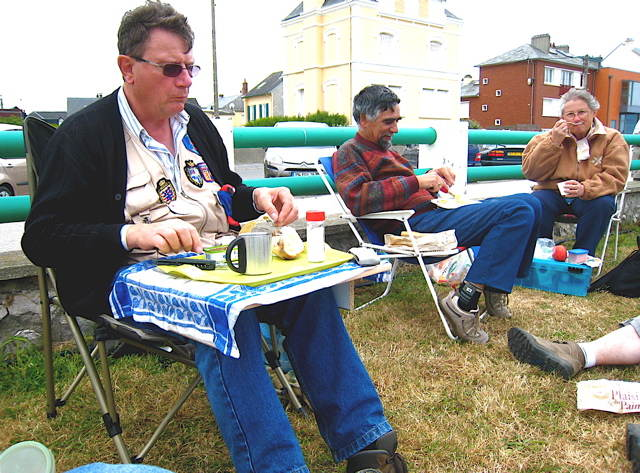
Ensuite déjeuner picnic. François s'est confectionné une table parfaitement adaptée à un déjeuner sur les genoux...

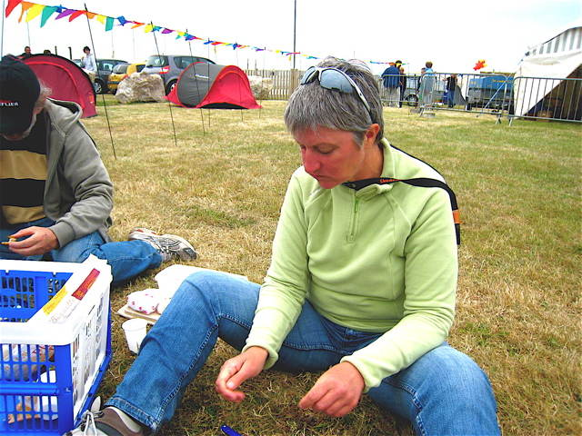
Annick, elle, s'assoit par terre et mange de même...

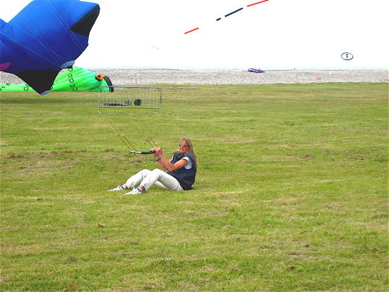
Corinne, elle, pour faire de la Nasa, n'est pas vraiment assise, mais presque couchée...

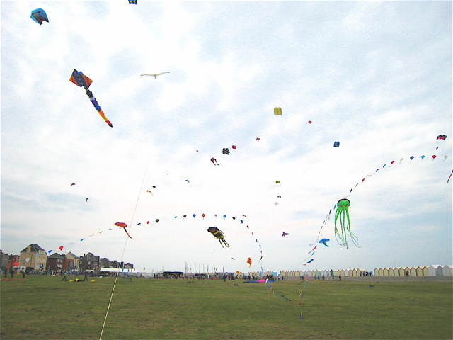
Bon, le vent est un peu monté, et même s'il vient pas mal de terre, il y a beaucoup de monde en l'air... J'ai ressorti mon Albatros 2, François a mis en vol tout seul, l'arche et le grand flow-form de l'Antenne de Beauce du CVCF...

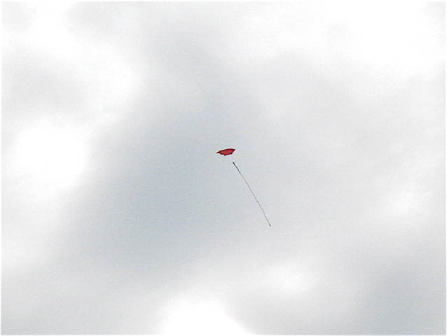
Comme ça vole bien tout seul, il y ajoute le V13 de Jojo Rivals, qui n'est plus très stable, mais avec une longue queue, pas de problèmes !

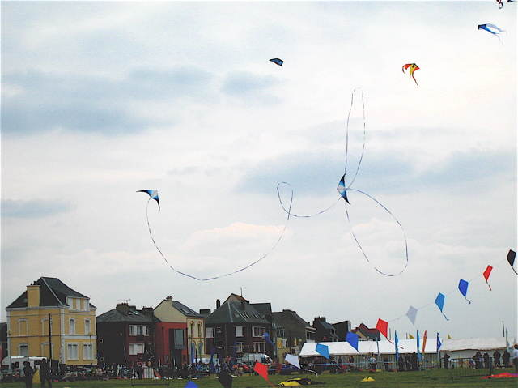
Les Alien, Chantal et Jean-Claude, présenteront plusieurs fois leur show de pilotables reliés par un ruban...

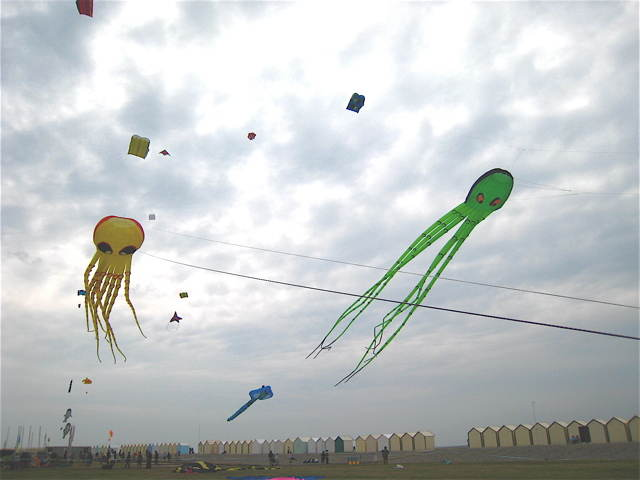
Les pieuvres arrivent aussi à rester en l'air un temps appréciable, pourtant ce ne sont pas des petites (30 m ?)....

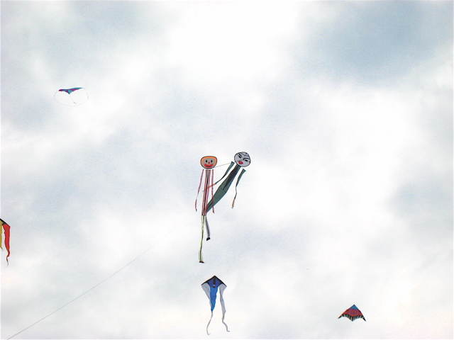
Emmanuel Duba arrive à faire voler son couple d'amoureux qu'il a reliés par un palonnier qui leur permet de voler côte à côte sans trop s'emmêler !

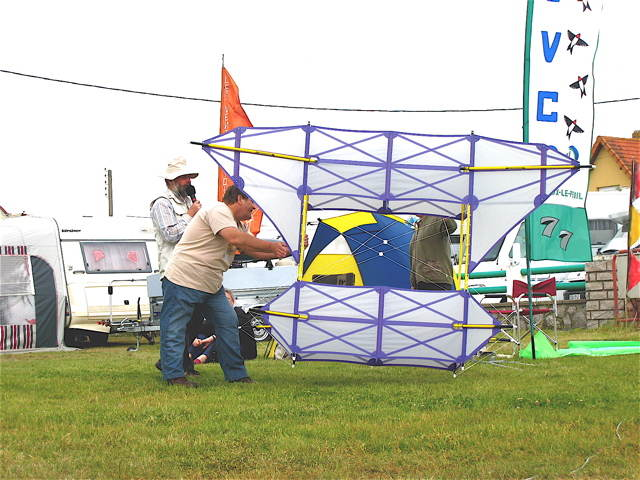
Eric Stempell sort le beau Saconney qu'il vient de terminer en deux mois de travail ! La finition est superbe, et il fera un premier vol impeccable...

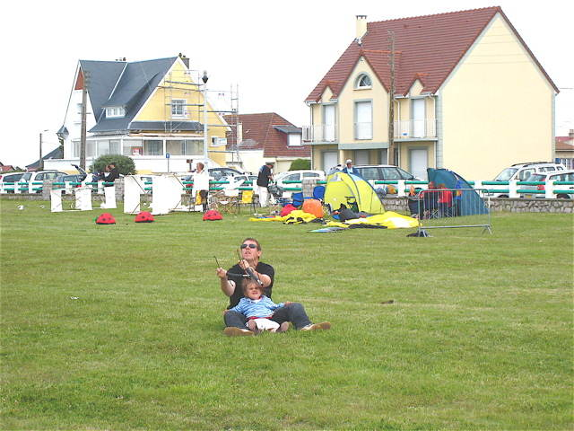
Fabian Tosolini, lui, s'est mis à la Nasa ! Par ce vent assez modéré, il peut même prendre sa fille en double !

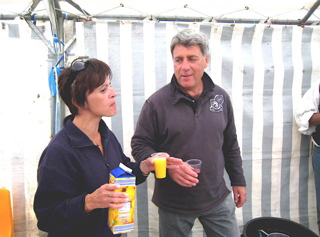
Jean-François Lorente et Line font un pot pour fêter leur mariage prochain (le 11 juillet, je crois) ! Line goûte le jus d'orange...

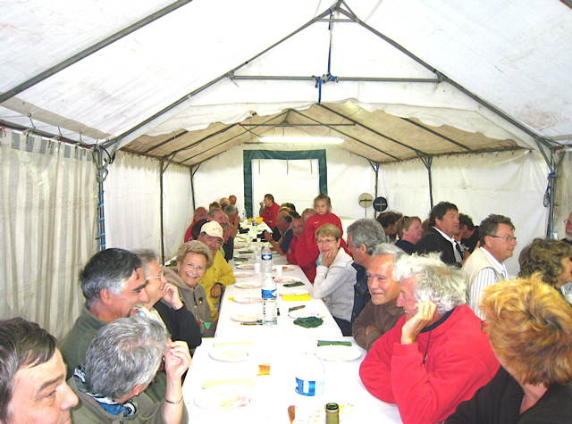
Ensuite, dîner barbecue sous le barnum !

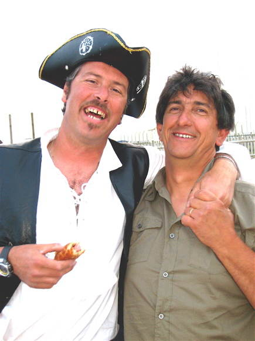
Jean-Michel est venu avec un semi-déguisement de Pirate et prend Bernard sous son aile...
Le vol de nuit sera vite abrégé par manque de vent. Je volerai tout seul avec mon Harfang qui finira quand même par tomber vers 23h30... J'ai adoré...

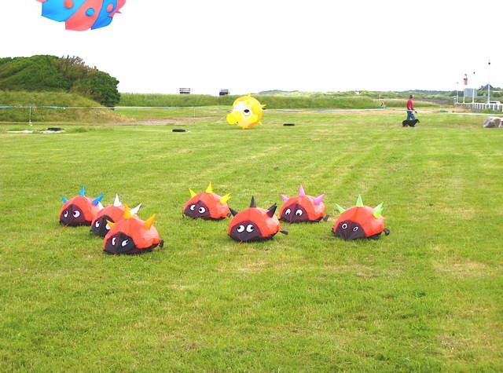
Le dimanche matin, quelqu'un a placé des coccinelles, mais leurs mères ont dû manger des OGM, ça ne leur a pas réussi !

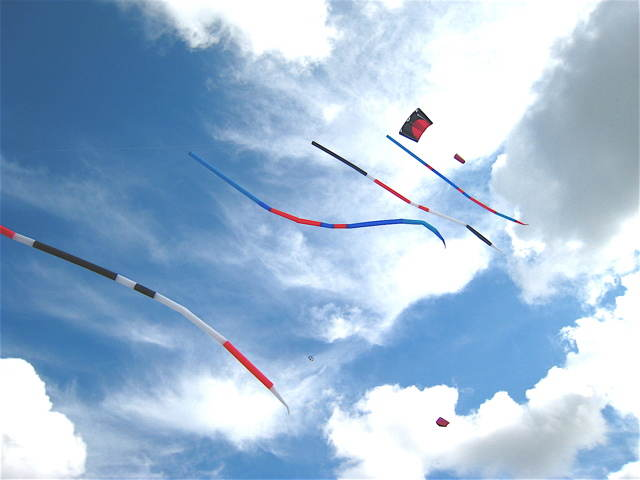
Au-dessus de nos têtes, de belles queues tubulaires ondulent dans un vent tranquille...

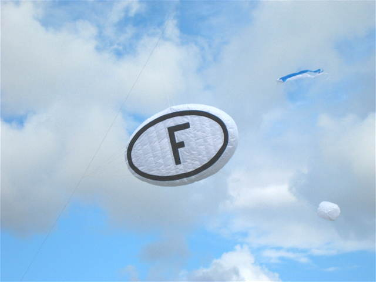
On revoit, après Somain, la plaque d'identification des voitures françaises !

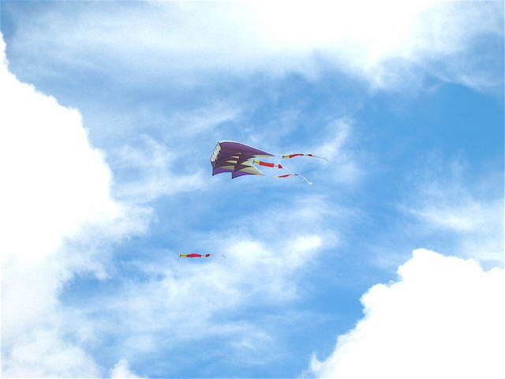
Le flow-form de Beauce a subi tous les changements de vent, mais il est toujours en l'air impavide !

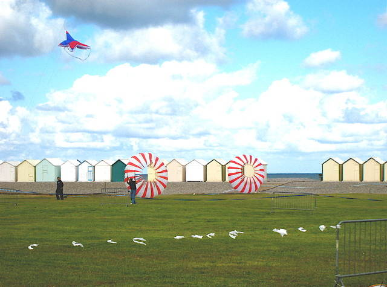
Au sol, deux bols, pas très grands mais qui décollent suffisamment du sol pour bien tourner... En fond, les pittoresques cabines de plage juchées sur la digue de galets qui protège notre terrain !

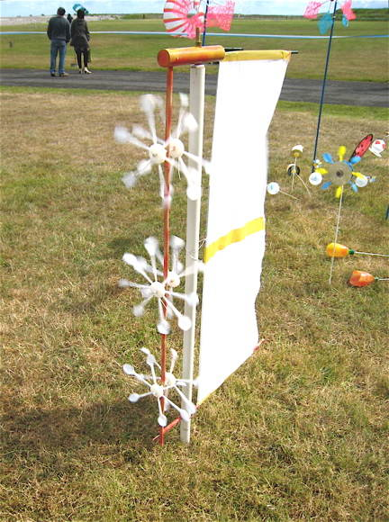
Dans le vent qui a forci, les cuillères de Patricia tournent plein pot, mais mon appareil est trop rapide pour saisir le flou du mouvement...

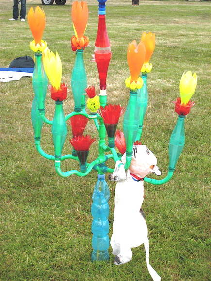
Un des chats d'Emmanuel s'est échappé et essaye de grimper aux cactus...

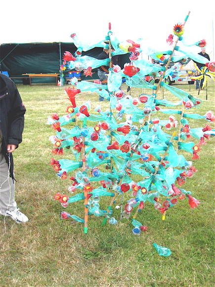
Les cactus de Néné ont encore grandi, et il a aussi amélioré l'éclairage de nuit, ajoutant toujours de nouveaux projecteurs colorés !

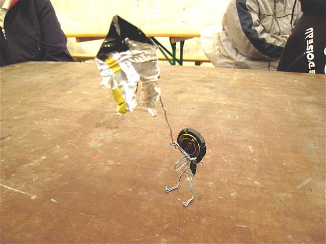
Pour remercier Bruno, je vais lui offrir cette sculpture représentant un cervoliste et son pyrodelta (j'explique, ça n'est pas forcément évident)... Sculpture toute en fer forgé (à la main) et métal repoussé, de grande valeur...

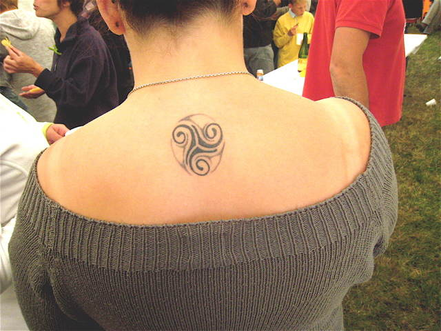
Plus joli, un triskell celte sur les épaules de la copine de Marie...

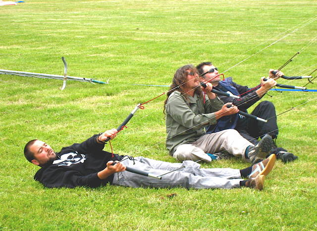
En attendant, dans le vent parfois fort, les Pirates prennent une position défensive pour faire voler les Nasas !

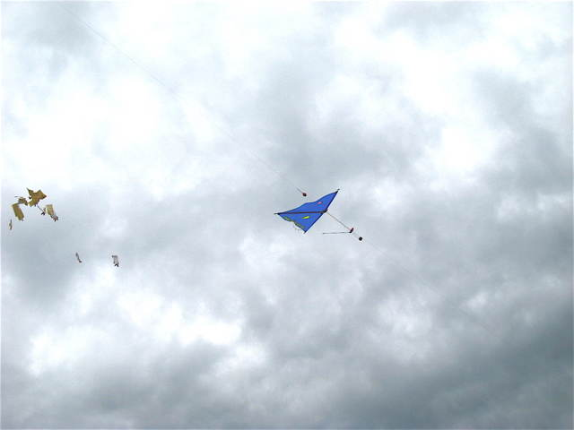
Lâcher de bonbons, Bruno est le grand spécialiste, il en larguera 8 kg ! La navette redescend, et les bonbons, agrémentés d'une papillotte retardatrice, tombent lentement en s'éparpillant...

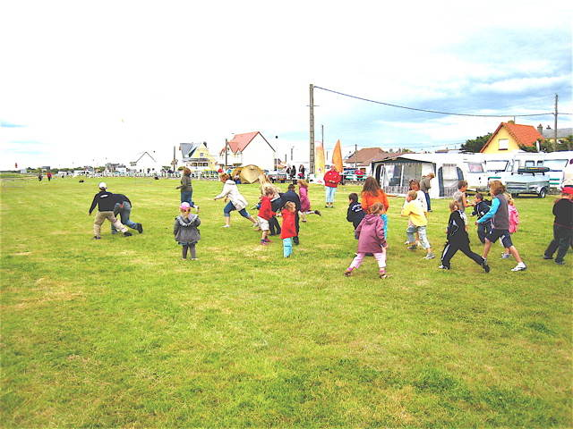
Comme d'habitude, les enfants courent comme des fous et les plus rapides ramassent tout ce qu'ils peuvent saisir sans penser aux copains !

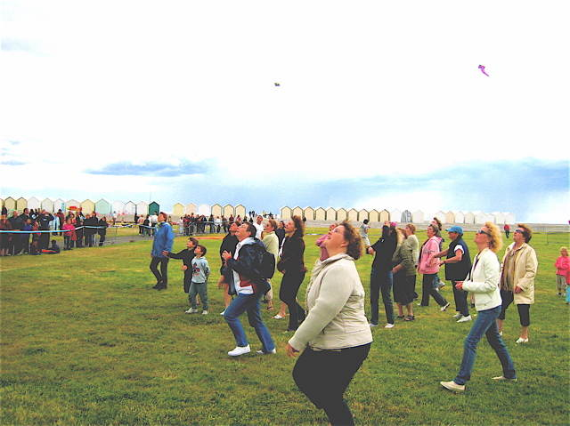
Une variante, pour le Fête des Mères : ce sont les mamans qui vont concourir... A voir les regards attentifs et même anxieux, on sent bien que ça ne va pas rigoler non plus !

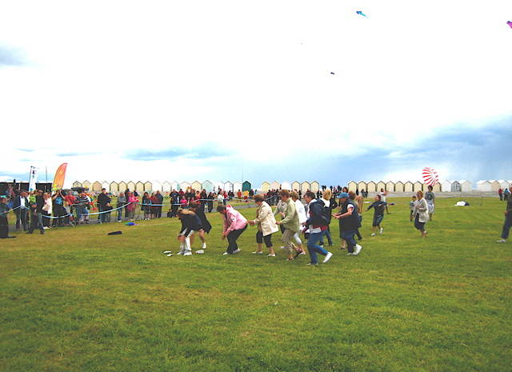
C'est parti, les mamans sont déjà là à pied d'oeuvre...

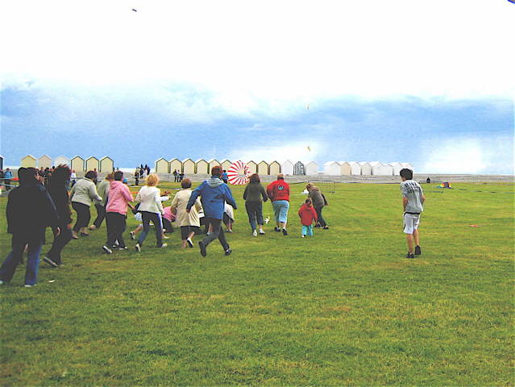
Encore un lâcher, mais l'excitation monte. On va arrêter, sinon, il faudra des casques et des protections de coudes et de genoux...

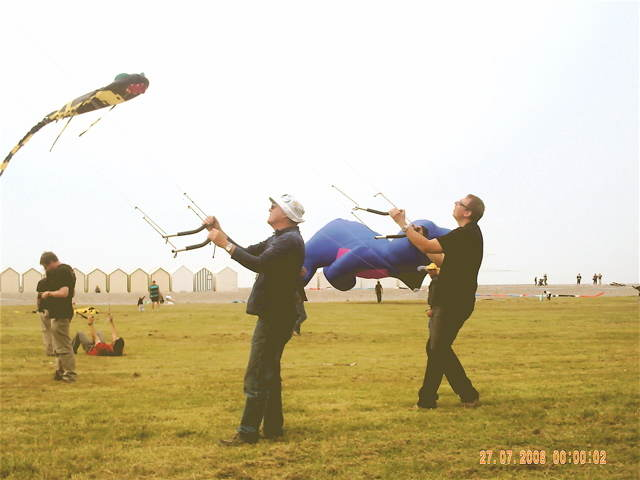
Le vent est très calme, je ramasse une des Nasas mises à disposition par les Pirates... J'ai un peu de mal à la gonfler, mais une rafale arrive et je ferai 15 m en courant avant de maîtriser de justesse la bête ! La rafale a malheureusement annoncé une averse prolongée, et le festival se termine brutalement par le départ du public, puis des cervolistes... Mais bon, il était presque 5 h et on s'est bien amusé avant !

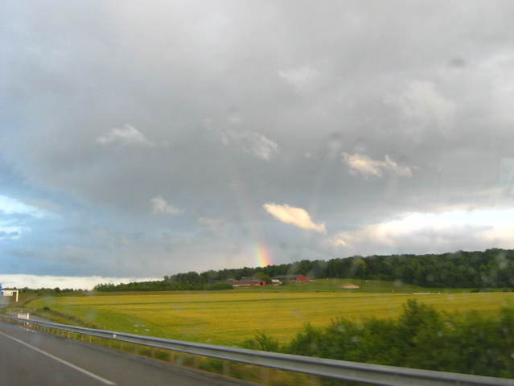
Sur la route, je croiserai encore quelques grains et les arcs-en-ciel qui vont avec !
Cayeux 2009 : J'aime bien ce festival à échelle humaine, où toute une équipe de bénévoles s'est démenée dans l'ombre pour que tout tombe à point, les barnums, la cuisine, etc... bravo et merci à tous !